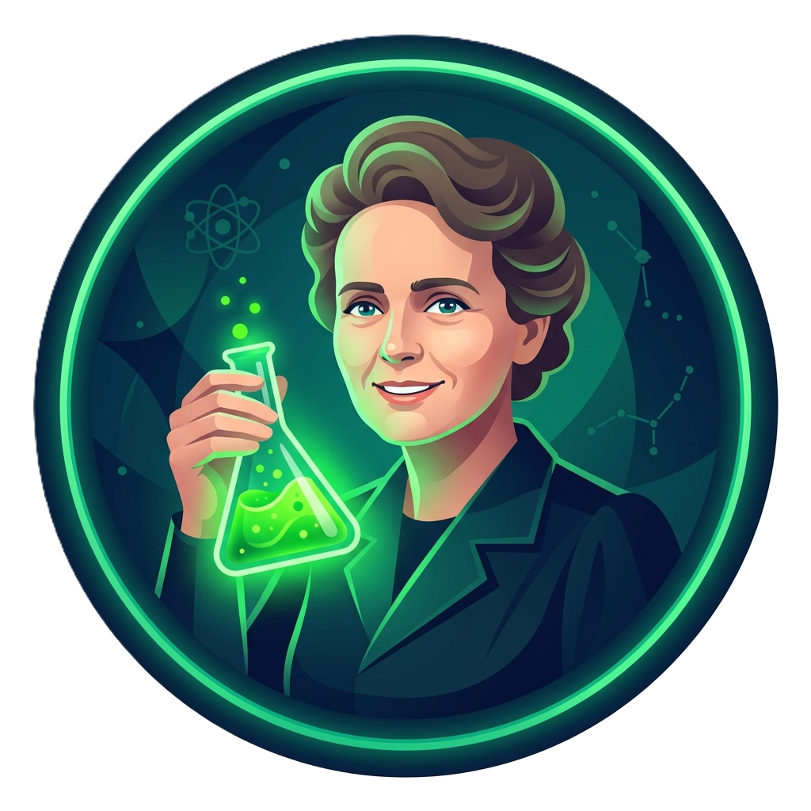

Pré-ENEM Digital MT · Química
Ação Governamental de Educação Pública | Desenvolvimento autoral Bio+Tech EduDesign

🧪 Estudo das Soluções — Pré-ENEM

—⭐ 0 XP
❤️❤️❤️
🏅 0
Progresso: 0/5 missões
🚀 Missão: Dominar as Soluções
Uma jornada gamificada com metodologias ativas: Aprendizagem Baseada em Problemas (ABP) + Gamificação
Você foi contratado(a) como químico(a) júnior de um laboratório de análises. Uma cientista histórica será sua mentora nesta jornada de 5 missões. Escolha quem vai te acompanhar:
👩🔬 Escolha sua Mentora Cientista:
📚 O que você vai aprender:
- Conceitos de soluto, solvente e solução
- Coeficiente de solubilidade e curvas de solubilidade
- Concentração comum, título em massa (%), ppm e molaridade
- Diluição e mistura de soluções
- 5 questões oficiais do ENEM + 3 questões-desafio inéditas
🌟 Sobre as Mentoras:
Escolhemos 6 cientistas históricas para celebrar o protagonismo feminino na ciência. Cada uma acompanhará você durante as missões com dicas contextuais baseadas em sua trajetória real.
🗺️ Trilha de Missões
Complete as missões em ordem. Cada uma desbloqueia a próxima e concede uma badge exclusiva. Sua mentora te acompanhará em cada etapa. Boa sorte, !
🏆
Parabéns, químico(a)!
Você concluiu todas as missões.
🥇
🏅 Suas Conquistas
0
XP TOTAL
0
ACERTOS
0
BADGES
-
RANKING